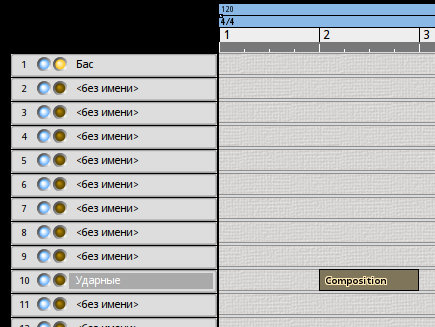

У нас есть два инструмента - бас и ударные, а значит, можно вознаградить себя за усердие и наконец-то написать несколько тактов нашей будущей композиции. Начинать будем не с начала, а с некоторого абстрактного куска где-нибудь посередине, который потом дополним вступлениями, развитием темы, отступлениями и дополнительными частями.
Переключимся в редактор Rosegarden комнаты Эксперименты, чтобы создать пару простеньких рисунков для каналов 1 (бас) и 10 (ударные). Двойным щелчком по метке первой дорожки («без имен») переименовываем её в Бас. В группе полей Параметры дорожки справа выбираем 1-й канал для фильтра записи. В группе Параметры инструментов снимаем галочки с полей Банк и Программа, чтобы Rosegarden не посылал событий смены патчей в Ardour.
Уже можно записывать с MIDI-клавиатуры, но прежде настроим метроном и названия ударных. Вызываем диалог через меню Студия/Управление метрономом..., и вводим значение высоты тона 44 для такта, для доли и для слабой доли. На этой ноте на 10-м канале у нас закрытый хай-хэт. Метроном автоматически включается при записи или может быть включен при воспроизведении щелчком на кнопку метронома в транспорте. Транспорт вызывается и скрывается клавишей T.

Дорожку номер 10 переименовываем в Ударные, выбираем для неё 10-й канал для фильтра записи.
Отредактируем названия ударников.
Composition Drums (названия банков должны быть латинскими буквами).CompositionДиалоги можно закрыть. В параметрах инструмента (на левой панели снизу) дорожки 10 выбираем 65. Composition для поля Программы (список нужно прокрутить вниз). И снимаем галочки с полей Банк и Программа, чтобы Rosegarden не генерировал MIDI-события смены патча.
Инструментом рисования (карандаш) создадим на дорожке Ударные сегмент от цифры 2 до цифры 3. Двойным щелчком по нему открываем и видим драм-ролл с названиями ударных снизу вверх. По клику на название они звучат.
С помощью зажатой кнопки Shift и мыши выделим один такт под линейкой метра, чтобы создать петлю. Теперь при воспроизведении Rosegarden здесь зациклится, и можно будет мышкой делать партию ударных, слушая, что получается.
Ноты можно записывать с MIDI-контроллера - в том числе, вводить их пошагово при помощи кнопки на панели. Вот получившийся паттерн ударных.
Чтобы записать бас с MIDI-контроллера, удостоверимся, что запись включена на дорожке Бас в главном окне и, нажав на транспорте кнопку записи, записываем партию по первому каналу, затем квантуем.
При создании басовой партии учитываем, что она должна перекликаться с бочкой, ноты надо начинать либо одновременно с бочкой, либо обыгрывать сильные и слабые доли такта чередованием бочки и баса - в общем, играть так, будто это один сложный инструмент. Кроме того, не стоит увлекаться мелодической линией. Бас - инструмент тяжёлый, и перетянет на себя функции лидирующей партии, а аккомпанементу останется либо настаивать на тонике, либо модулировать и оттенять бас.
Это в идеале, а в реальности получилось показанное на скриншоте.
Скопируем этот такт на три последующих, выделенные сегменты склеиваются кнопкой на панели. Немного подправим с вариациями.
Теперь запишем результат на дорожки Ardour и продолжим редактирование там. Щелкнув с нажатой кнопкой Shift под метром, отключим петлю. Приглушим все дорожки кроме первой и десятой.

Результат немного несинхронен, но квантование решит проблему.

Квантование производится через контекстное меню клипа ударных MIDI/Квантование, можно добавить немного свинга (20%-30%) для ударных. Для баса свинг не обязателен. Уменьшим размеры клипов слева и справа до сетки тактов (2-6) инструментом Захват (палец).